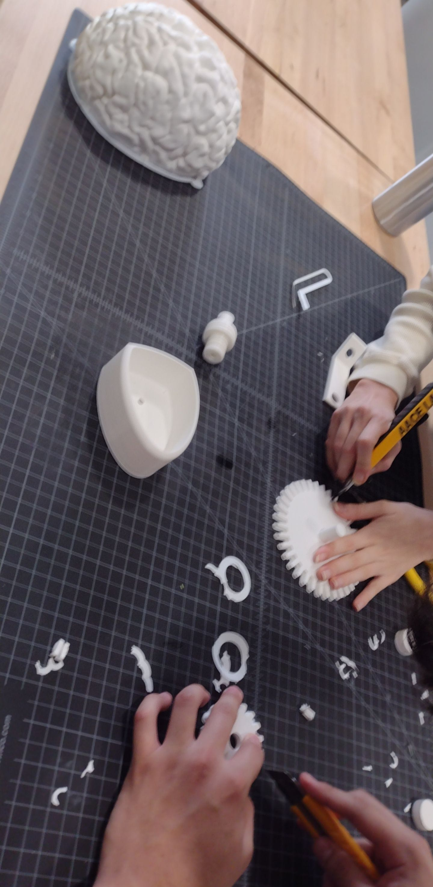

Modeling spin 1/2 down of electrons
Objective
The objective of this project was to create a 3D model that simulates the half down spin of electrons, and to analyze the force applied and the angular momentum of the model.
Project Description
The project involved 3D printing a model and using Tracker software to record data. This data was then analyzed with kinetic and kinematic equations of motion to graph the angular velocity of the larger gear over the time period of the revolution, as well as the applied push force against time. A Python script was used to outline and calculate angular momentum using the odeint (ordinary differential solver) function.
Software Used
This project was developed using Tracker for data recording, Python for data analysis, and Ultimaker Cura for 3D printing.
Skills Learned
Through this project, I learned about the importance of tolerances in 3D printing and the iterative process of design. I also gained experience in using Tracker for data recording, Python for data analysis, and the odeint function in Python for solving ordinary differential equations.
Project Documentation
If the PDF failed to load, refresh or download to view here: Download PDF
3D Model
Video Demonstration
The above video demonstrates how this model simulates a down half spin. The spin is the total angular momentum of the body. For example, the spin of a planet is composed of the orbital angular momenta of each of the elementary particles that makes up the planet. In this case, the half spin of an electron indicates that it takes a rotation of 360 degrees, two full rotations, for the electron to reach the same state that it was in initially.